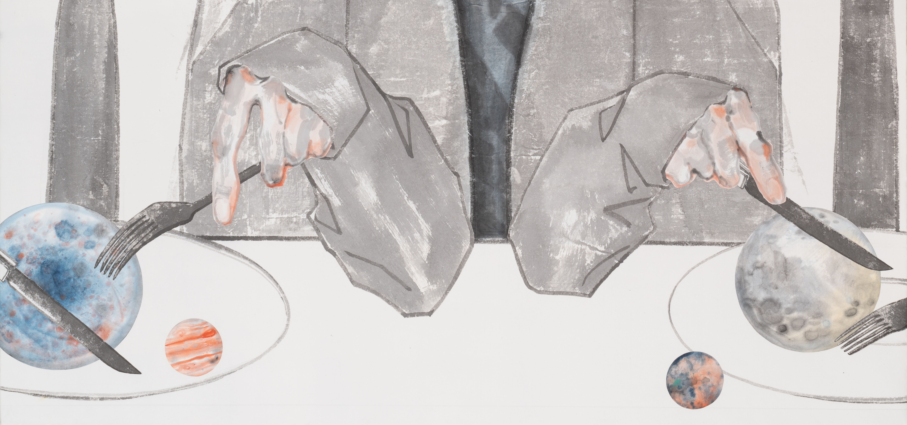
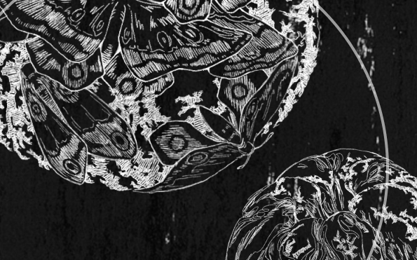
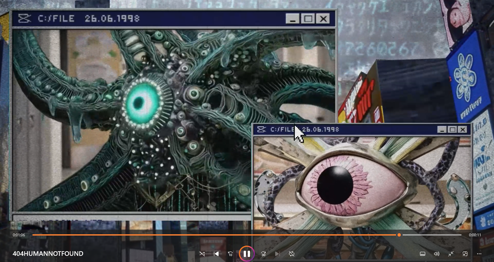
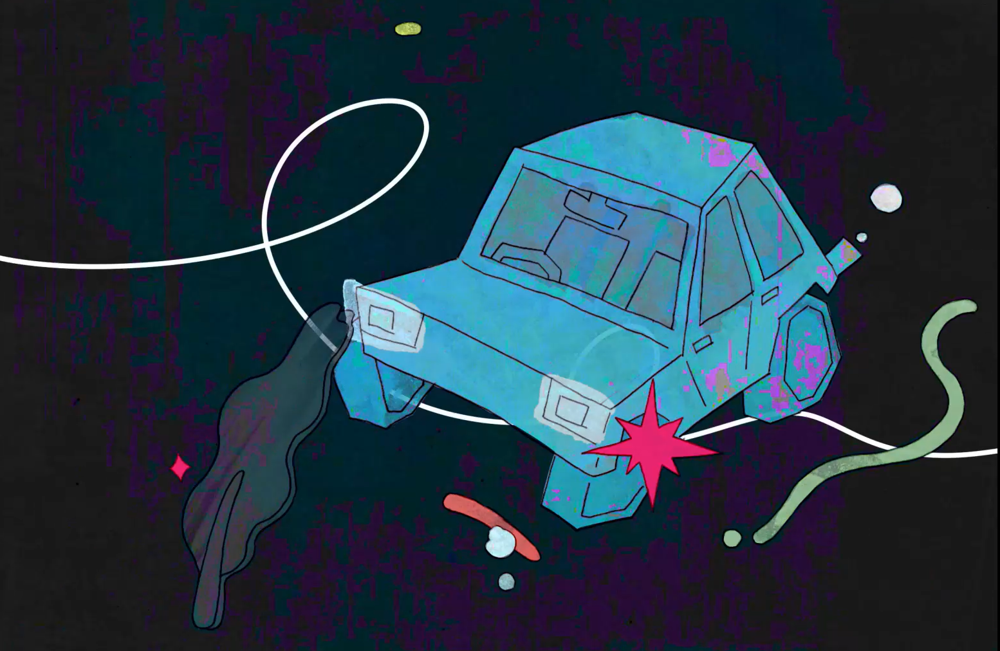

02 / Selected Works
WORKS
Projects —
01

血食 / THE HEMATOPHAGY
[EDIT — One short sentence only. The detailed project statement lives on the project page.]
→
02

404共生系统 / 404 Symbiotic system
My first attempt at turning the paintings on my easel into animation.
→
03

ROTTEN ORANGE
It's something that has no source and is everywhere. Just as a moth devours a person, so does anxiety.
→
04

Collaboration
→
05

Other Works
other personal works
→